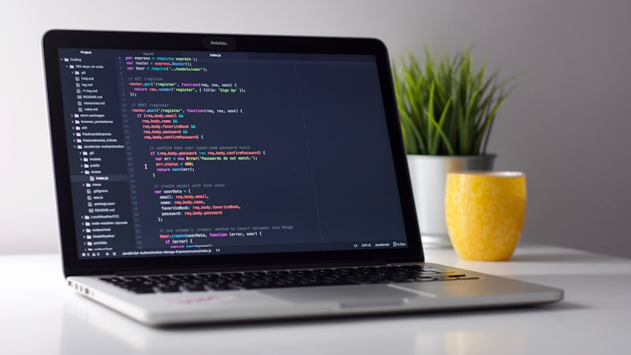
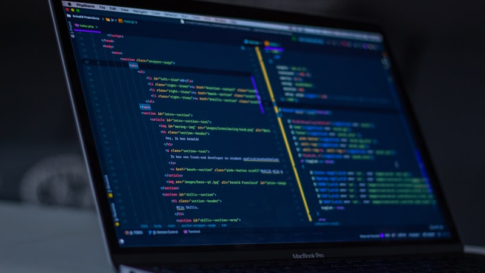
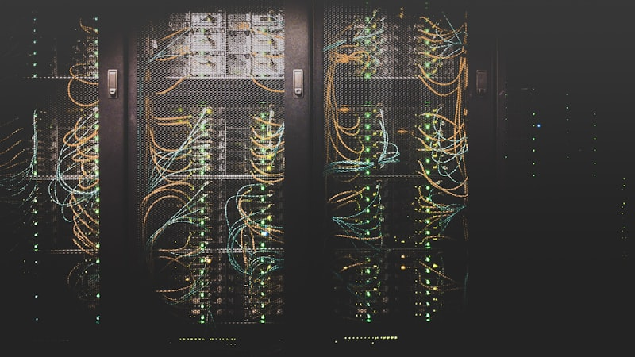
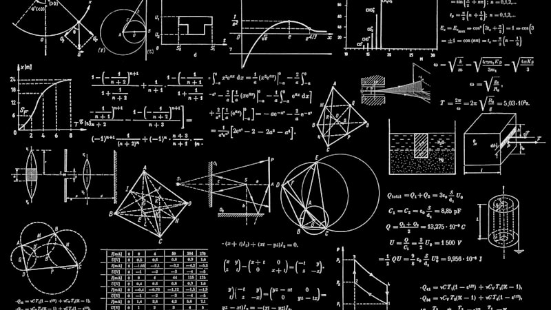
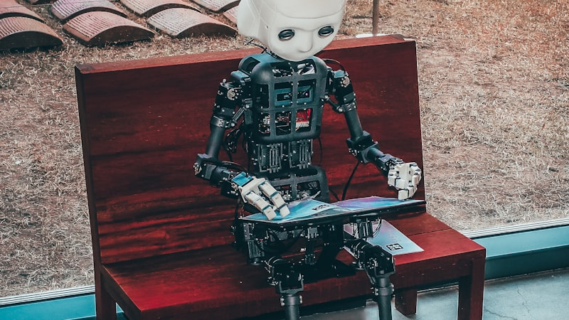
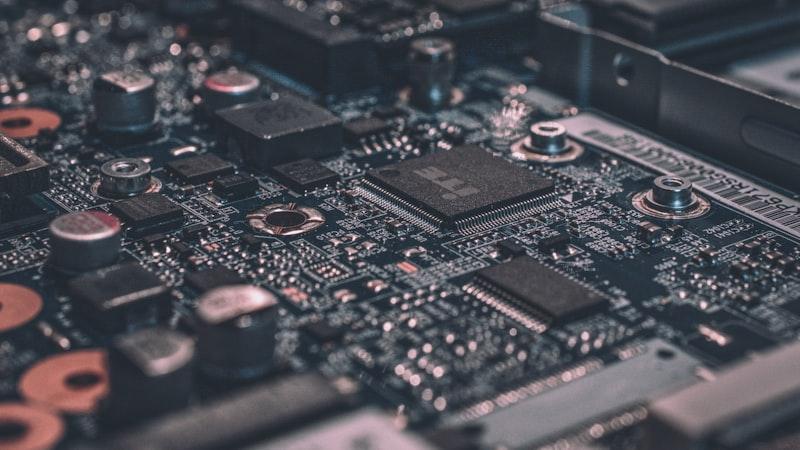

Course Catalogue
Browse the Odd Semester 2025-26 offerings. Core department subjects are mandatory for the programme; open electives may be chosen as per credit rules.
Core Department Subjects
Required courses for Computer Science & Engineering undergraduates.

Operating Systems
Process management, scheduling algorithms, memory allocation, virtual memory, and file-system design with hands-on lab exercises on Linux.

Database Management Systems
Relational modelling, SQL, normalization, transactions, and indexing. Includes a mini-project building a normalized schema for a campus app.

Computer Networks
OSI and TCP/IP stacks, routing protocols, congestion control, and network security fundamentals with packet-capture lab sessions.

Design & Analysis of Algorithms
Divide-and-conquer, dynamic programming, greedy methods, graph algorithms, and asymptotic complexity analysis through programming assignments.
Open Electives
Optional subjects available across departments - pick based on interest and seat availability.

Introduction to Machine Learning
Supervised and unsupervised learning, model evaluation, and a practical project using Python libraries for classification and regression tasks.
Cloud Computing Fundamentals
Virtualization, IaaS/PaaS/SaaS models, container basics, and deploying a simple web service on a public cloud platform.

Internet of Things
Sensor networks, microcontroller programming, MQTT protocols, and building a prototype smart-campus monitoring node.